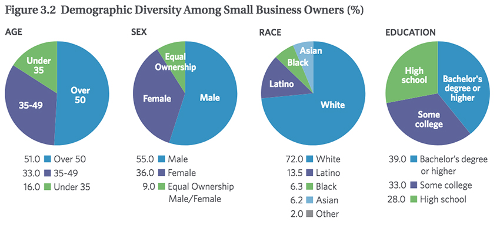

For this class project, I chose to create a website for a support-service business providing
administrative and project management services. I plan to make this site live as a means of promoting my
freelance business services building on my experiences as an Executive Assistant and Project Manager.
We were individually tasked with conducting user research to determime and prioritize site needs.
Based on my findings, I created a style guide outlining color palette and fonts, developed a site map and did wireframing.
The site is coded with Bootstrap (HTML) and further stylized with customized CSS. It is mobile responsive.
Business Mission
The Virtual Assistant is your one stop shop for business support, customer service and the peace of mind you deserve.
We offer professional, and highly creative support services and cost effective solutions for small to mid-sized business
clients and non-profits in the areas of administrative assistance, marketing, graphic design, web development,
social media, event planning and much more. Our main goal is navigating our clients toward success, not only as a
virtual assistant, but a loyal partner.
Site Goals
Before dipping into a lot of research, I decided to figure out what the goals of the goals of the site were.
Here is a comprehensive list of what I decided.
Attract new clients
Highlight the services offered and clearly communicate the value of those services and how they meet client needs
Provide a client intake process; capturing client data
Provide a way to contact the company, engage in conversations with experts that help to guide clients in choosing
company services ultimately helping them make smart business decisions
Drive potential clients to other ways of interacting with the business; i.e. social media
Provide resources for clients, empowering them should they want to take steps independently
Research
At the discovery phase of my project, I conducted online research in order to get a better
understanding of the potential client base. I was interested in learning more about the demographics
and needs of Entrepreneurs and Small Business Owners.
We referred to them throughout the entire product development process. Reviewing this information especially
informed the information that ultimately ended up on the home page.

Discovery: Demographics of Business Owners
I had discovered that my target market consists of 20% start up businesses, 20% entrepreneurs,
and 60% small business owners & mid-enterprises.
Of those, I was surprised to learn that in addition to the majority 50+, there was a significant
market in the age range of 25-49.
There were almost as many female business owners as there were male.
The education levels of small business owners are very close to equal;
high school, some college, and BA or higher.
Concerning race, it was notable that Latino's have a high percentage
of small business ownership, though a majority are still white.
Discovery: Psychographics of Business Owners
Doesn’t need and can’t afford a full-time employee.
Has trouble completing most important tasks.
Needs work done that doesn’t require an office presence.
Travels a lot and needs someone who likes working virtually.
Spends more time organizing rather than executing.
Knows what tasks need to be done but doesn’t have the staffing power.
Discovery: Webographics of Business Owners
Small businesses see the benefits of technology for their businesses, especially in marketing and
helping with day-day operations.
Major potential for small businesses lies in harnessing technology for customer interactions.
Important areas include: optimized mobile pages and product information on their websites.
Integration can help unlock potential and productivity in the products small businesses already use.